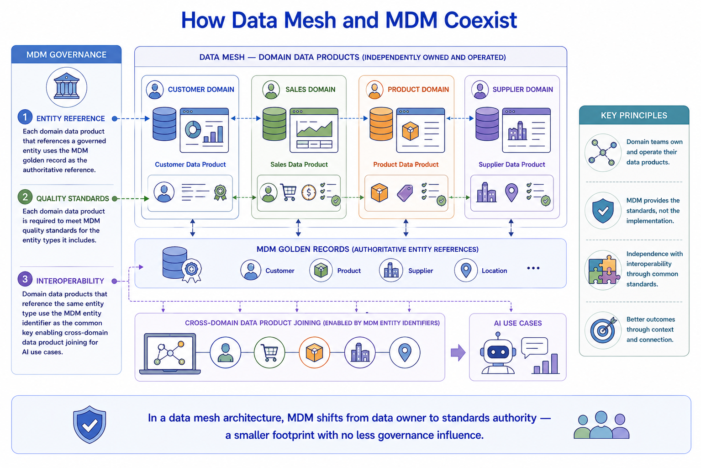
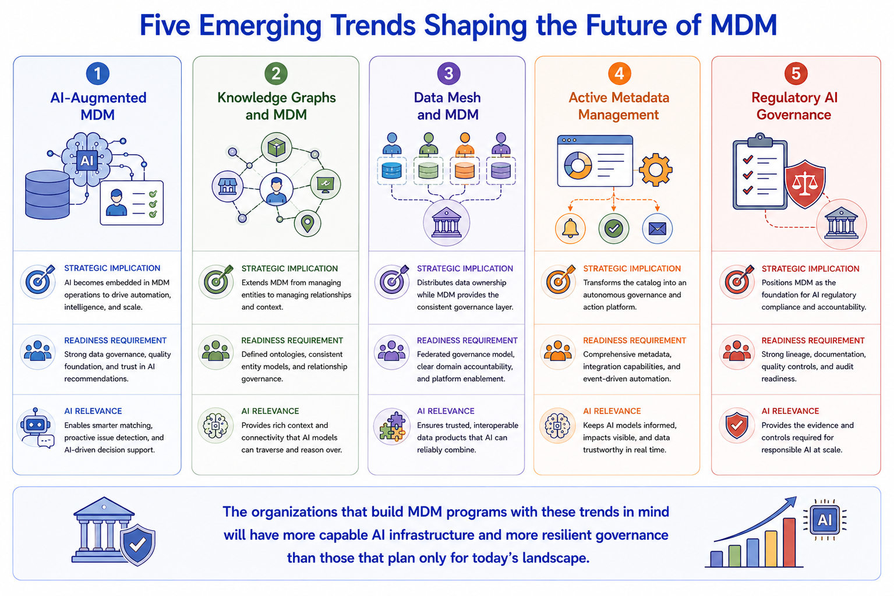

Emerging Trends
Module support notes
Evaluating Emerging Trends for Organizational Fit
Emerging trend evaluation requires balancing innovation awareness with organizational reality. A knowledge graph integration might be strategically compelling for an organization with a large generative AI program but premature for one still establishing basic MDM quality practices.
The evaluation framework assesses each trend against strategic fit, organizational readiness, value potential, and risk — producing a considered adoption recommendation rather than either reflexive enthusiasm or reflexive skepticism. The output of this evaluation should feed directly into the MDM roadmap and governance evolution planning processes, ensuring that trend awareness translates into deliberate roadmap decisions rather than unplanned technology adoptions that bypass the governance framework.
Tip
Assess every emerging trend against four dimensions before adding it to the roadmap: strategic fit with the organization's AI and data strategy direction; organizational readiness in terms of governance maturity, technical capability, and cultural readiness; value potential in terms of specific business or AI outcomes adoption would unlock; and risk and cost in terms of implementation complexity and transition requirements. Trend evaluation prevents both premature adoption of unproven practices and late adoption of practices that have become competitive necessities.

Data Mesh and MDM — A Deeper Look at the Relationship
The relationship between data mesh and MDM is frequently mischaracterized as competitive — the data mesh architectural pattern distributing data ownership away from centralized platforms like MDM. In practice, they are complementary. Data mesh distributes operational data ownership to domain teams but requires a standards layer to make independently owned domain data products interoperable — and MDM provides exactly that standards layer.
The golden record serves as the authoritative entity reference that all domain data products align to. MDM quality standards serve as the federated governance requirement that makes data products trustworthy enough for AI use cases that span multiple domains. The shift for MDM in a data mesh architecture is from centralized data operation to standards authority — a different and arguably more strategic role that requires less operational footprint but no less governance expertise.
Note
In a data mesh architecture, MDM shifts from data owner to standards authority — a smaller footprint with no less governance influence. Three MDM governance touchpoints remain essential: entity reference, requiring each domain data product to use the MDM golden record as its authoritative entity reference; quality standards, requiring each domain data product to meet MDM quality standards for the entity types it includes; and interoperability, requiring domain data products to use the MDM entity identifier as the common key enabling cross-domain joining for AI use cases.

The organizations that build MDM programs with emerging trends in mind will have more capable AI infrastructure and more resilient governance than those that plan only for today's landscape.
